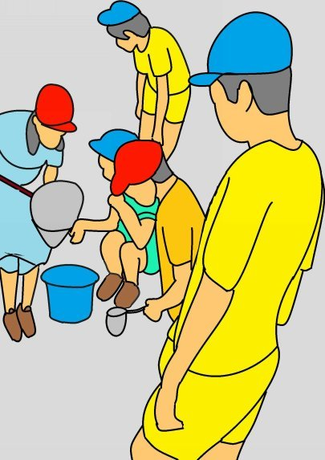
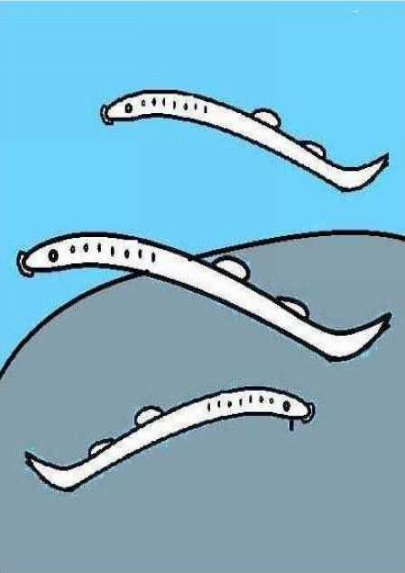
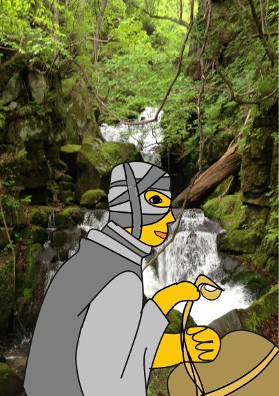
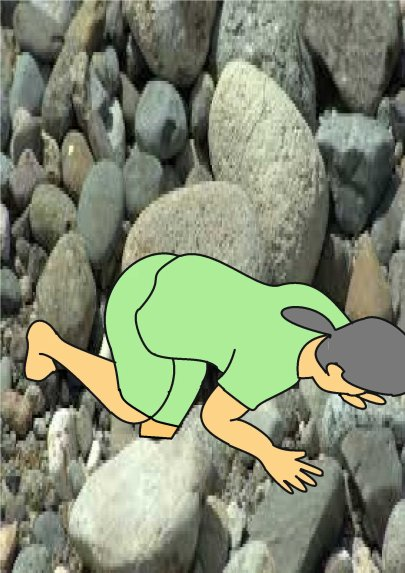
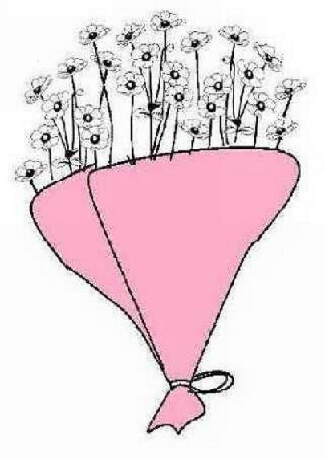
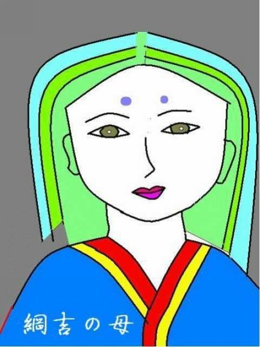
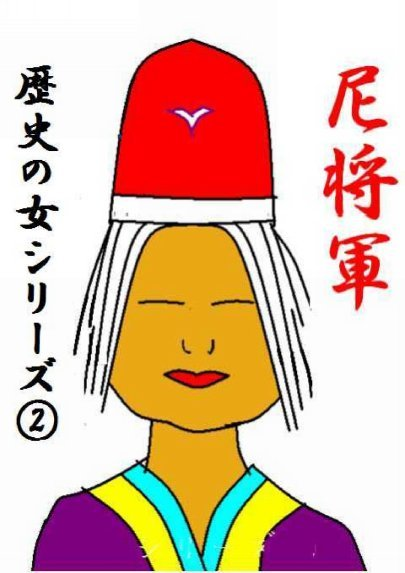

| ⑦秋明菊 | |
| 深川龍 | |
| UNKNOWN (2016) | |
第七話
じいっじじいっーと鳴くのは油蝉じゃ。しゃわしゃわとやかましいのは熊蝉じゃ。夏の初めに鳴くにいにい蝉の声はもう聞こえんわい。かなかなという蜩の澄んだ声が油蝉やにいにい蝉の中に混じり始めた。もう夏も終わりに近いと云うことじゃ。
「おいっ、川がかれたぞ。」
がき大将の声に、あちらこちらの木戸から子供たちが飛び出して来る。男の子は勿論じゃが女の子もおる。それぞれに、箕やら、桶やら思い思いの物を持って出て来たんじゃ。川がかれると泥鰌、小鮒、鯰、諸子などたくさんの魚が捕れるんじゃ。子供たちは川の中に飛び込んでいった。
「見ろっ、大きなあかねだ。」
この地方であかねと呼んでおったのは追河のことじゃ。僅かな流れの中で五寸程もある追河が跳ねておったのじゃ。追河は産卵の時期をむかえて雄の体がきれいな色になっておった。
「この石をどけるんや。」
やや遅れて遡っておった男の子たちは大きな石の下の水たまりにかくれておる魚を捕まえておった。

「どけどけ、八目鰻や。」
がき大将は仲間を押し退けて八目鰻をさがしておる。八目鰻は精がつくと云うて親が喜ぶんじゃ。
「あっ、蟹を捕まえたわ。」
女の子たちはたわいも無く沢蟹や目高を捕まえておった。
五、六人ほどにもなった先頭の子供たちは土橋の下をくぐって、どんどんと上流へいった。川幅がだんだんと狭くなり、勾配が急になった。
先頭の子供たちが立ち止まった。
「おい、でっかい魚が逃げたぞ。そこの石の下や。」

大きな石の下に手を突っ込んだり、棒切れの先を入れて突いたりしておった。
遅れておった女の子たちが追いついてきた。
「ねえ、もう戻ろうよ。」
後ろの方にいた小さな女の子が不安そうな声を出した。
「ここまで来たら、ため池はもうすぐや。
山の中のため池がかれておったら、鯉や鮒がどっさりとれるぞ。」
子供たちは夢中になって、かれた川底を上って行く。右に左に曲がった川の中では先が見えない。
大きな石がごろごろした所に来た時じゃった。突然、目の前に老婆が現れた。先頭を行くがき大将が棒立ちになった。
「あっ、ヤマンバや。」
老婆と言うても背筋はしゃんと伸びて大きな体をしておった。ただ、顔付きが異常なのじゃった。口は耳の近くまで裂けて、鼻はのっぺらぼうになって、頬はケロイドのようになって削げておった。
「わしはヤマンバなんかやない。川がかれたでのう。おまえたちと同じように 魚を拾って歩いとるのじゃ。」
老婆はそう言って、裂けた口でにやっと笑ろうた。
「くっ、喰われる。」

がき大将の後ろにいた小柄な男の子が叫んだ。それと同時に、子供たちは踵を返して、我先にと今来た方へ駈け出した。女の子たちは恐ろしさのあまり泣き出した。足ががくがくして上手く走れないのじゃった。
「これっ、待たんか。転んで怪我をしたらどうする。待て、待て。」
老婆は追ってくる。
「助けてくれっ、ヤマンバにつかまる。」
子供たちは夢中で逃げる。一人の女の子が大きな石と大きな石の間に片足を突っ込んで動けなくなった。
「ねえっ、待ってよ。」
子供たちは転んだその女の子を置いたまま逃げて行った。
女の子は恐怖のために泣き声も出なかった。老婆はゆっくりと女の子に近づいた。
「大きな石には魚の餌になる苔が生えておるんで滑りやすいんじゃ。」
女の子は石の間から足を抜こうと必死じゃった。
「来ないで。近づかないで。」
老婆はおかまいなしに女の子に近づいた。
「履いている草履をお脱ぎ。もっと、足から力を抜くんじゃ。」
老婆は女の子の足を持って、そっと抜いた。女の子は

立ち上がって逃げようとしたが、抜いた足に力が入らない。
女の子はしくしく泣くより仕方がなかった。もう、ヤマンバに喰われてしまうと思ったのじゃ。
老婆は女の子の足を持った。
「折れておるな。手当をせにゃならん。さあ、負ぶってあげるぞ。」
老婆はゆっくりとしゃがんで女の子を背負うと、川を上り始めた。
子供たちは女の子を残したまま、かれた川の中を転げるように逃げ下った。
土橋の所まで来ると、やっと村人に出会った。
がき大将は大声を出した。
「ヤマンバが追っかけて来る。」
普通なら笑って通り過ぎるが、今は子供たちの様子がちょっと違う。
「みんな慌てて、どうした。」
「ハナちゃんがヤマンバにつかまった。」
ほっとしたのか、がき大将が大声で泣き出した。他の子供たちもそれにならったので泣き声の大合唱が始まった。
「まあ、始からちゃんと話してみろ。」
村人は半信半疑で子供の話を聞いた。ガキ大将はしゃくり上げ、しゃくり上げしながら要点を話した。
一方、山奥の炭焼き小屋に着いた老婆はハナちゃんを小屋に入れて、折れた足に薬草を塗って副え木をあてた。
「二、三日は動かしちゃならんぞ。」
老婆は炭焼き小屋の中で火を起こし、釜に湯を沸かし始めた。
ハナちゃんはヤマンバが上手なことを言って、やがて、自分を煮て喰うに違いないと思った。
「帰る。家に帰る。」
「無理を言うものじゃないよ。」
意外なことに、老婆は沸かしたお湯で山芋を煮て食わせてくれた。
「ねえ、お婆さんはヤマンバなんでしょ。」
老婆は笑い出した。
「ヤマンバなんて、この世の中に居やしないよ。」
「でも、お婆さんはずっと山の中に住んでいるんでしょう。」
「病気で、こんな顔になってしまったからね。」
「山の中で何をしているの。」
「リスや猿、それに小鳥たちとお話しているよ。」
動物たちと話が出来るなんて、やっぱり、このお婆さんはヤマンバなんだと、ハナちゃんは思った。
夕方になっても、ハナちゃんは村に帰らない。ハナちゃんの両親はもちろんのことじゃったが、村人たちも心配になりはじめた。
「本当に、ヤマンバにさらわれたんじゃろうか。」
子供たちは村人たちに自分たちが見たヤマンバの説明をした。
「うん、確かにヤマンバだった。口は耳の近くまで裂けて、鼻はのっぺらぼうになって、頬はそげておった。」
村人たちは山を捜索することになり、それぞれに松明を持って山に向かった。老婆は近づいて来るたくさんの松明の灯を見た。
「こらっ、ヤマンバ、子供を返せ。」
村人たちはそれぞれに斧や山刀を持っておった。老婆は自分を捕まえに来る村人たちが怖くなった。
「さあ、逃げるのじゃ。」
老婆は手荷物をまとめるとハナちゃんを背負った。細い月の明かりをたよりに、高い山を越えて逃げていった。
村人の必死の捜索にもかかわらずハナちゃは見つからない。それから、十日程もたって、両親も村人もあきらめかけておった頃じゃった。ひょっこりと、ハナちゃんが片足を引きずりながら帰った来たのじゃった。
「あのお婆さん、ヤマンバなんかじゃなかったよ。やさ

しいお婆さんだった。」
子供たちはハナちゃんの言うことが信じられない。
「ヤマンバに喰われてしまったんじゃなかったの。」
「ほら、お別れにお花をもらった。」
ハナちゃんは山中に秋の訪れを告げて咲く秋明菊の花束を持っておった。
(完）
深川龍の
歴史の女シリーズ①綱吉の母、②尼将軍
をお読みください。


- 1 -